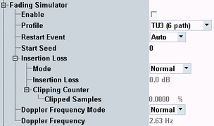

The following parameters enable and set up the fading simulator. For background information, see "Fading Simulator".

Enables/disables the fading simulator.
Remote command:Selects one of the multipath propagation condition profiles defined in annex C.3 of 3GPP TS 45.005.
The following types of propagation models are supported: TU (urban area), HT (hilly terrain), RA (rural area), EQ (equalization test) and TI (very small cell).
All models involve a movement of the MS. The speed of movement in km/h is indicated as part of the profile name, the number of propagation paths is also indicated.
Example: "TU3 (6 path)" means urban area, MS moving with 3 km/h, 6 propagation paths.
Remote command:In "Auto" mode, fading automatically starts with the downlink signal. In "Manual" mode, it is started and restarted manually.
Remote command:Sets the start seed for the pseudo-random fading algorithm. This parameter enables reproducible fading conditions.
Remote command:In "Normal" mode, the insertion loss (i.e. the required attenuation at fader input) is calculated based on the currently selected "Profile". In "User" mode, it can be adjusted manually.
A lower insertion loss allows for a higher downlink power but can result in clipping.
Remote command:Queries the percentage of clipped samples. This information is useful for insertion loss mode "User". It allows you to find the lowest insertion loss value for which no clipping occurs.
Remote command:Displays the maximum Doppler frequency. In normal mode, it is resulting from the selected fading profile, in user mode the maximum Doppler frequency is set manually.
Remote command: